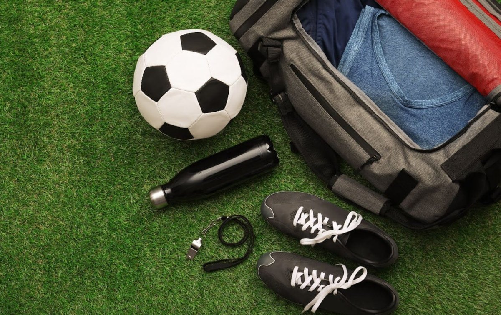
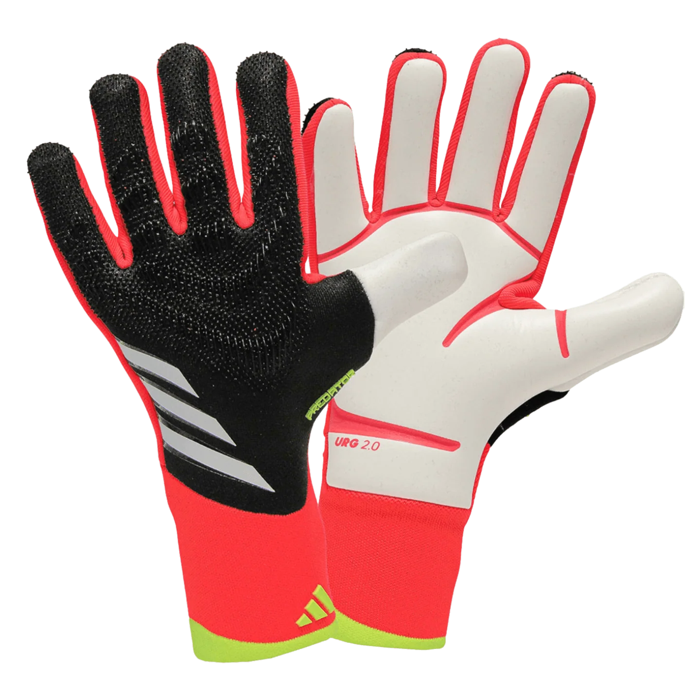
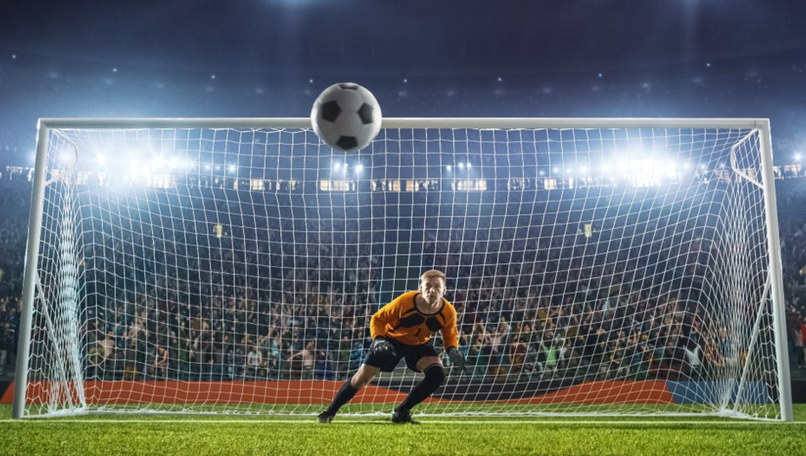

The Equipment You Need
Soccer Basics

The first things you'll need are your standard soccer basics. Cleats or turf shoes will ensure that you are able to get traction on your playing surface, shinguards will help protect your shins from contact with other hard objects that your leg might swing into (or might swing into your leg), and athletic wear will allow you the range of motion to be effective.
Gloves

Goalkeeping gloves serve several purposes and come in with various features that you may or may not want to have. The most important features are padded fingers and palms with a rubber that allows you to grip the ball well. Some gloves will include a spine on the back to prevent your fingers from bending backwards, but this comes with a trade off of finger flexibility and could affect your ability to make a fist to punch the ball away or control throws.
Goalkeeper Mindset

One of the intangible things you'll need is a specific mindset. Being a goalkeeper is stressful as you are often a large factor in the game. Good performances can turn losses into wins, and poor showings can give away games you should have won. As opposed to other players who can have bad performances hidden by team play, a high score can easily be blamed on a goalkeeper, even if they had a great game. You'll need to be able to withstand this pressure, as well as overcome the instincts your body has to get out of the way of moving objects. Shots will come hard, and as a goalie it's your job to put yourself in its path.